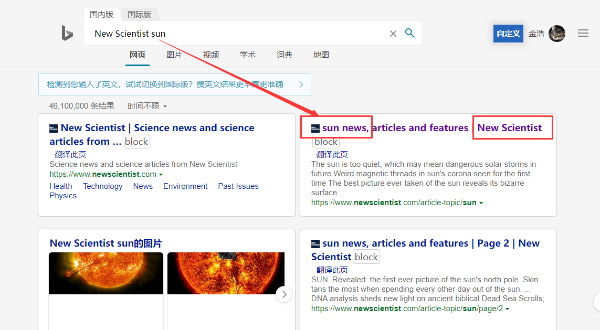
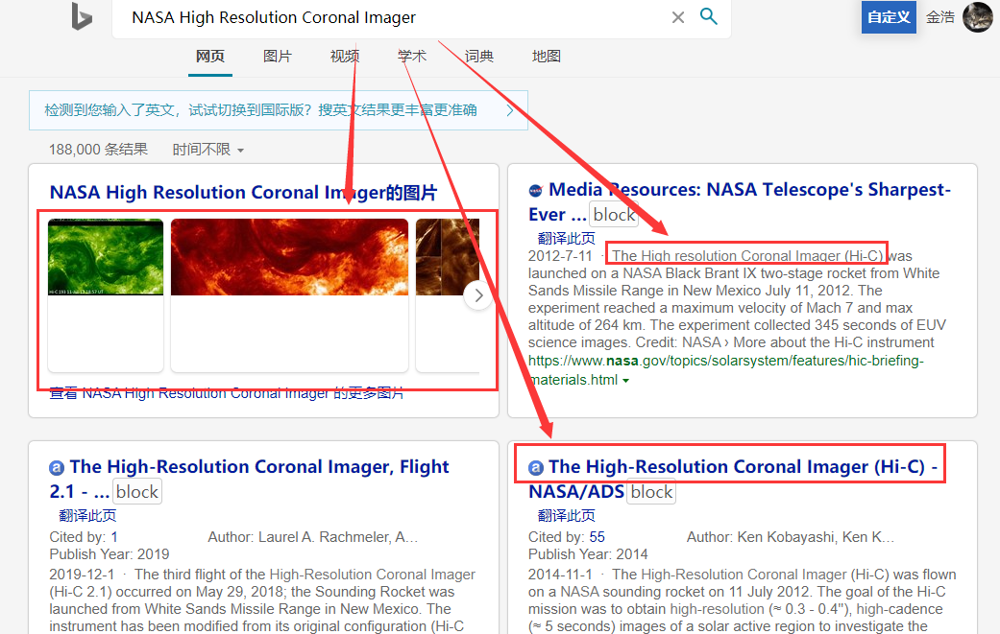
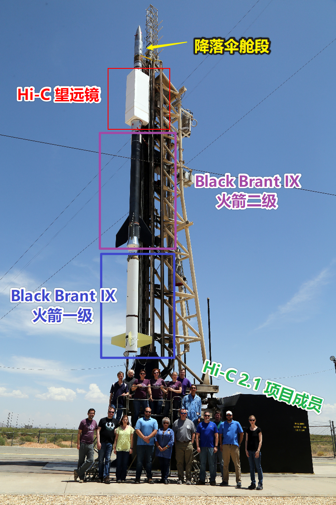
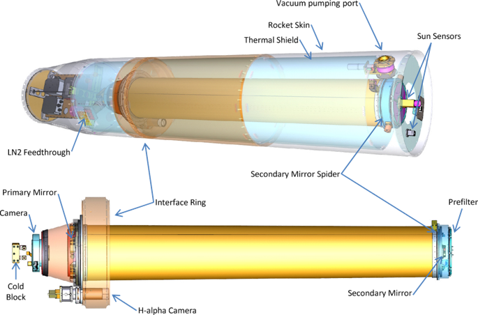
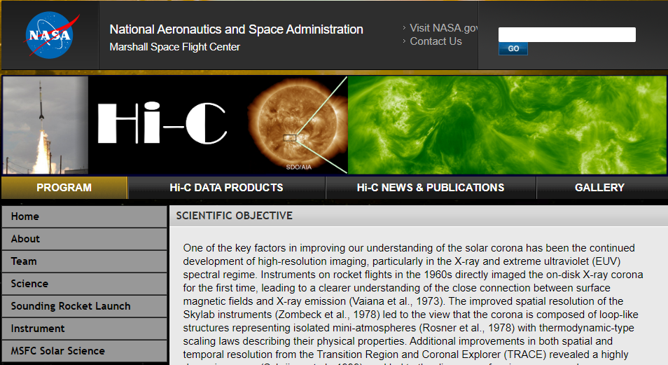
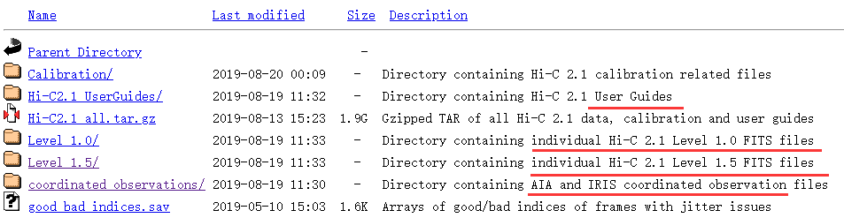
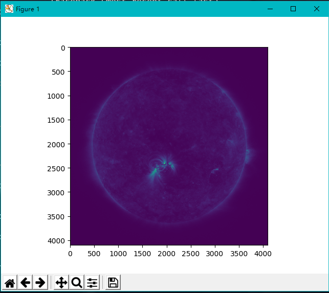
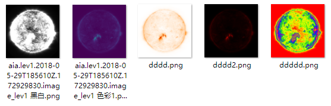
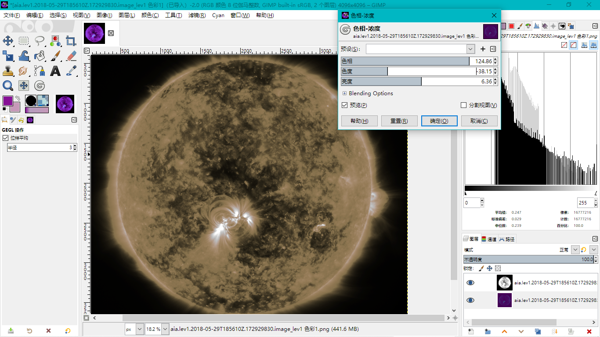

如果你想要
请DIY吧
⚓️机缘巧合🍀
之前网上闲逛的时候，突然想起 Edge for Chrome 浏览器的 网页App功能 ，又捣鼓了一番。而我之前就装了微博（主要是看航天的微博），便打开测试一下。
于是就看到了一篇微博：新科学家杂志上刊登的高清太阳日冕图，一下子就被这篇文章的封面的照片吸引住了。
配色醒目，细节突出，层次感非常好，而且还是太阳（也许是一种对太阳的特殊感觉,赞美太阳!）。我便想着搞到高清的图片做壁纸，但是一番搜索，并没有找到（原论文也没有）高清的大图。
由于有这方面的视界，顺其自然地便想着自己着手做了。因为大部分的天文数据都是开放的，一些处理数据的图像软件也是有的。于是和 Bing一起<(￣︶￣)↗[GO!]
⚓️数据的获取📑
有了微博的那张图(就是文章开头的那张图啦)作参考，直接搜索引擎就好啦，基本就是先找到新闻源，然后找到这个项目的相关信息，最后下到数据，作图即可。
⚓️让我们先Bing一下⌨️
可以得知是新科学家杂志发表的一篇新闻，那么直接检索 新科学家杂志 太阳来看看有没有有用的消息。发现好像并没有太多相关的内容,那毕竟是外网的内容,我们直接英文走起。
检索 新科学家杂志就可以从百度百科里找到它的英文名 New Scientist(这里建议还是要搜一下的, 毕竟专有名词可能会比较特殊), 直接检索 New Scientist sun我们就可以看到结果啦。

点开后直接就可以看到这篇文章的封面图了，我这就只放个链接吧。
Weird magnetic threads in sun's corona seen for the first time Read more
文章带的图片清晰度不够，所以还是要尝试自己做。另外可惜的是要订阅才能看到全文
收费的不要
看来得另辟蹊径。不过仔细看了一下图片的来源写着 NASA High Resolution Coronal Imager，有了些眉目，这应该就是来源了。直接一个 Bing检索这个词，结果非常 amazing.

基本可以得知这个是缩写为 Hi-C项目的成果了,点开右排第一个链接一探究竟.
一通阅读，可以得知这是一个 探空火箭项目🚀 ，通过探空火箭 Black Brant IX发射 Hi-C太空望远镜，把 Hi-C送入亚轨道，进行短暂的 弹道飞行(考虑了空气阻力的抛物线轨迹)并在 滑行段(只受引力阶段)对太阳成像。相当于用火箭大力地把望远镜从地球表面 抛起，望远镜可以依靠惯性冲到百公里高度。 这个高度已经脱离 浓密大气层了(事实上绝大部分气象和主要影响可见光观测的大气成分都集中在地表以上几公里范围内的 对流层；100km高度为国际公认的太空界面——卡门线)
The experiment reached a maximum velocity of Mach 7 and max altitude of 264 km. The experiment collected 345 seconds of EUV science images.
实验达到的最大速度为七马赫(七倍音速)，最大高度264千米，收集了345s的极紫外科学图像
我做了简单的注释，原链接里还有更多的项目实施相关的图片。

望远镜的全称叫 The High-Resolution Coronal Imager，也是该项目的名字，通过检索这个名字找到了一篇期刊文章：The High-Resolution Coronal Imager, Flight 2.1 里面介绍了望远镜的情况。下图来自这篇文章，图解了望远镜的结构和实验组件：

Hi-C火箭发射视频:
既然项目找到了，还有了大致的了解了，我们继续吧。
⚓️拿下数据🗄

简单地浏览主页的菜单，第二个一级菜单就是Hi-C DATA PRODUCTS——Hi-C 数据产品看这名字就知道是我们想要的了。
二级菜单介绍：
-
- 官方的数据使用介绍，图像处理手册
获取图像只要点击数据库链接就好啦(通过数据库的介绍图片，可知是 Hi-C 2.1是我们找的照片的数据源)。

有用户手册，也有各种不同的打包文件。倒数第二个是 AIA和 IRIS的观测数据，应该是用于和 Hi-C拍摄的图像做对比分析的。这里可以随便选择包进行下载，也无所谓哪个观测设备拍的，毕竟只是做壁纸的话，对数据的要求并不高。这里我直接下了 AIA的数据了(介绍了半天居然没用Hi-C的数据，哈哈哈哈)
相关项目的介绍：
1.AIA:太阳大气成像仪（Atmospheric Imaging Assembly）,为SDO卫星的一个成像部件。
2.IRIS:表面区域成像光谱仪（the Interface Region Imaging Spectrograph），SMEX卫星。
⚓️开始处理吧
下载到的格式为 FITS,是个没见过的格式，这个时候又到了 Bing的时候啦。
不过英文好的话，也可以直接阅读数据库里的英文用户手册，按照上面的做应该也是可以处理的。但是考虑到涉及一些专业的软件，这里我们还是通过搜索引擎来帮助我们，看看有没有更适合小白的方法 :happy: 。
⚓️再Bing一下🔔
检索词就 FITS、处理、格式、Python之类的，相信可以得到比较好的结果。
这是搜到的较详细的 FITS格式的介绍：在Python中FITS格式文件数据的读取
这篇文章详细的介绍了FITS格式的结构内容，以及一个叫做Astropy的处理天文数据的Python库。
一个崭新的大门出现了，一个新的世界出现了。
⚓️Astropy库🔭
由于是 Python的第三方库，需要安装 Python, 可以参考这篇文章 Anaconda之路
如果是直接安装的 Python并且加入了环境变量的话, 按 Win+R, 在弹出的框框里输入 cmd，回车,在弹出的 cmd界面输入：
pip install astropy
安装搞定！
⚓️你好~太阳☀️
通过查阅Astropy的文档，有专门的 FITS 格式的读取模块
Win+R,在弹出的框框里输入 cmd后,在弹出的命令提示符界面输入 ipython调出交互式python
(下面的代码框里的 #后面的字符为注释, CTRL+C时无需复制)
参照着文档的描述，开始读取 FITS文件。以下内容来自我写的Astropy处理FITS.py，源文件可直接在左边蓝色的字符上右键另存为即可。主要是我个人的理解和对官方文档的翻译，所以为了方便大家对比，这里推荐一位大佬编写的Astropy的中文文档 ，右键另存为即可。
1 | # astropy库fits模块读取FITS文件 |
上面把图像数据赋值给了 data这个变量，并演示了一些处理矩阵的函数。
下面就开始处理 data, 图像处理参考：参考文章1;参考文章2(前面文章的汇总和翻译)
1 | # 导入matplotlib绘图库 |
效果：(分辨率为原图片,想要可自行保存)

其实这里的上色采用的是默认的色阶上色的,而且这样直接保存，自定义的空间就太少了。
不过这个保存图片的 imsave函数还是可以导入几个参数的，也算是弥补了一些不足。
1 | def imsave(fname, arr, vmin=None, vmax=None, cmap=None, format=None, |
比如里面的 camp就可以调节上色的色阶。
1 | # 导入pyplot库,取plt做别名 |
可以看到下方的函数说明里，imshow明显比 imsave要多好多的参数，这就提供了相当多的自定义空间，不过这里还是用的初始化的设置，所以两者的导出效果是一样的。
imshow的使用可以参考这篇文章：Matplotlib imshow()函数
1 | def imshow( |
效果：

1 | # 导入opencv库 |
效果：(此为原图，可直接右键保存)

⚓️修改色阶🌈
cmap其实是 colormap的缩写，指代的意思是色彩映射图。
有关于不同的 cmap可以参考：matplotlib.pyplot——cmap直观理解
通过不同的色阶设置，可以得到各种各样的配色的图片。

⚓️GIMP处理
GIMP:the GNU Image Manipulation Program
GNU不是Unix(GNU’s Not Unix) 图像 处理 程序a cross-platform image editor available for GNU/Linux, OS X, Windows and more operating systems.
一个跨平台的可用于 GNU/Linux, OS X, Window和其他操作系统的图像编辑器Whether you are a graphic designer, photographer, illustrator, or scientist, GIMP provides you with sophisticated tools to get your job done. You can further enhance your productivity with GIMP thanks to many customization options and 3rd party plugins.
无论您是平面设计师，摄影师，插图画家还是科学家，GIMP都能为您提供完善的工具来完成您的工作。 借助许多自定义选项和第三方插件，您可以使用GIMP进一步提高生产力。
总的来说就是 GIMP是一个专业的开源免费的图像处理软件。
我们取上文的 黑白着色和 默认着色的两张导出图片，来尝试自己做壁纸。
黑白着色可见保留了相当多的中间亮度的细节。
默认着色则保留了暗部和亮部的一些细节。
通过将 黑白着色叠在 默认着色的上面，然后 黑白着色采用 叠加作为图层的模式，就可以较好的保留两者的细节。之后再调节 明度曲线、色相、曝光，优化得到的最后结果啦。

⚓️后记
最后的效果就是这样啦！

前前后后拖了蛮久，时值暑假之际，静下心来把这篇补的差不多了。
还有一些日后再补，主要是自定义 camp，这样可以尝试复原文章的封面图，也可以尝试修改色阶来改善图像的动态范围，把暗部和高光的细节都体现出来。
林林总总的，我把我整个瞎捣鼓的过程都记录了下来，希望给诸君一些工作流上的启发吧。
希望疫情☣️早点结束。
同时也祝愿所有人一帆风顺吧~⛵️